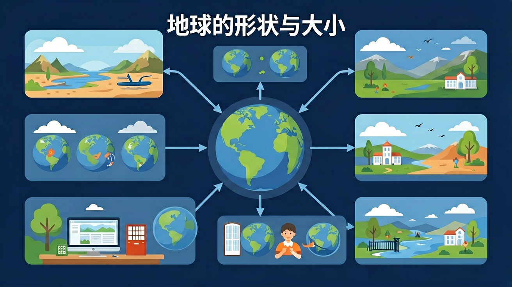

准确说出地球的平均半径（6371千米）、赤道周长（约4万千米）和表面积（5.1亿平方千米）
说出人类认识地球形状的四个阶段，并能用生活中的实例证明地球是个球体
利用地球的大小数据解释日常现象，比较赤道半径与极半径的差异
区分地球（不规则球体）与地球仪（正球体）的差异，判断不同证据的说服力强弱
先来测测你已经知道多少！答完点击"提交"查看结果。
【And】你每天站在地面上，看到的"地"是平的，"天"像个盖子——古人自然也这么想。
【But】但如果地球是平的，为什么海边的船"先见桅杆后见船身"？为什么月食的影子总是弧形？
【Therefore】真相只有一个：大地是弯曲的——地球是一个球体！让我们看看人类是怎么一步步发现这个事实的。
把下面四个阶段按时间先后拖到正确的位置（最早→最晚）
💡 提示：点击卡片选择，再点击下方空位放置
点击时代按钮切换疆域版图；悬停高亮边界；点击红色城市标记查看详情。
【And】你已经知道了"地球是球体"这个结论。
【But】如果有人问你"凭什么？"，你能给出几个生活中看得见的证据吗？
【Therefore】这节课我们要学会——不用坐火箭，站在地球上也能推理出地球是圆的！
站在海边看远方驶来的帆船，总是先看到桅杆的顶端，再逐渐看到船身——因为海面是弯曲的！如果海面是平的，应该一眼就看到整艘船。
发生月食时，地球挡住阳光，投在月球上的阴影边缘总是弧形——只有球体的影子才会在任何方向上都是弧线。
"欲穷千里目，更上一层楼"——站得越高，看得越远。如果大地是平的，视野范围应该和高度无关。这个现象只有在地球是球体时才能解释。
1519—1522年麦哲伦船队从西班牙向西航行，历时三年最终返回出发点。如果地球是平的，它会掉下去吗？不会——因为航行在一个球面上！
这是最直接的证据——人造卫星从太空中拍摄的地球照片。一张图胜过千言万语，地球的球形轮廓一目了然。
以下哪个证据的说服力最强？
【And】你现在知道地球是个球体了。
【But】那它到底多粗？绕一圈要走多远？表面积多少？——不知道这些数据，你对"地球"的认识还是模糊的。
【Therefore】记住三个核心数字，再用数字来理解"两极稍扁、赤道略鼓"到底是什么意思。
赤道半径：6378 千米 | 极半径：6357 千米
差了多少？6378 − 6357 = 21千米
这 21 千米的差距就是"两极稍扁、赤道略鼓"的数字体现。但注意：6378 ÷ 21 ≈ 300 —— 地球的"不圆"程度只占千分之三，肉眼完全看不出来！所以把地球画成"正圆球"在大比例图示上是可接受的近似。
💡 赤道周长 4 万千米 = 5亿个体委手拉手！
（一个体委≈1.6m，8个人排一圈≈地球的百万分之一）
📐 表面积 5.1亿平方千米 ≈ 中国陆地面积（960万km²）的 53 倍
根据你的掌握程度选做：
学完了！再来测一下，看看进步了多少。
📋 今天你学会了：
✅ 人类认识地球形状的四个阶段：臆想→推测→证实→确证
✅ 五大证据证明地球是球体：行船、月食、登高、环球、卫星
✅ 三个核心数据：6371km（平均半径）、≈4万km（赤道周长）、5.1亿km²（表面积）
✅ 地球是不规则球体：赤道半径6378km > 极半径6357km（差21km）
💡 记住这个口诀："刘三起义（6371），赤道四万绕一圈，表面积五亿一"。
复制提示词到 AI 学伴，生成「地球的形状与大小」的示意图或结构提纲；也可以上传你手绘的示意图，请 AI 学伴点评。
复制后可粘贴到 AI 学伴继续对话。